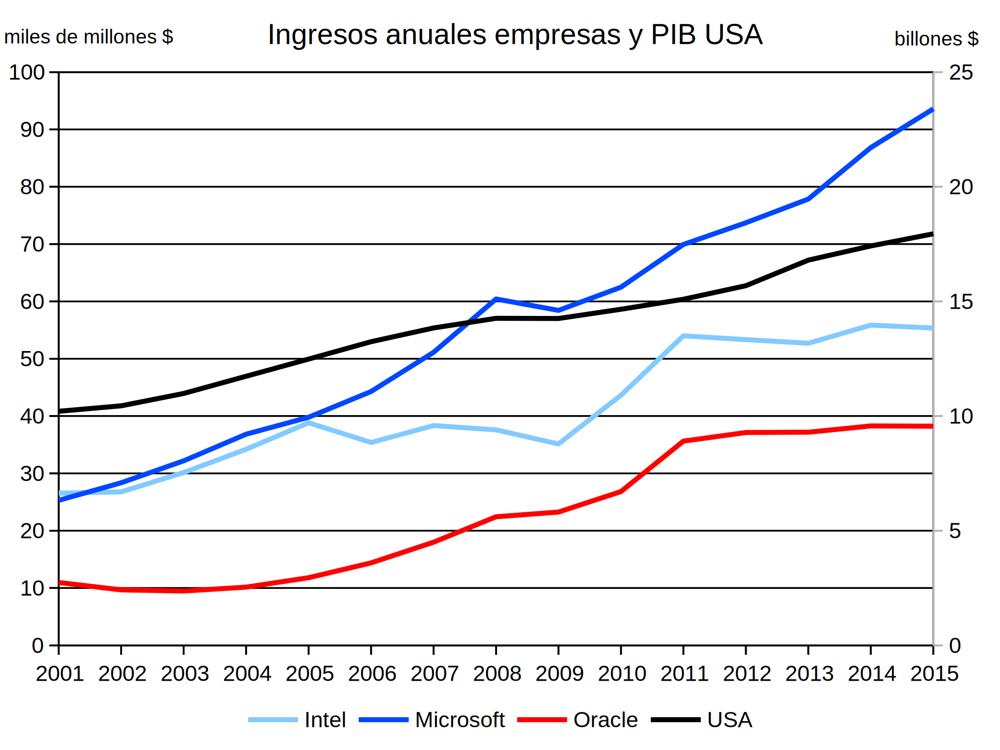
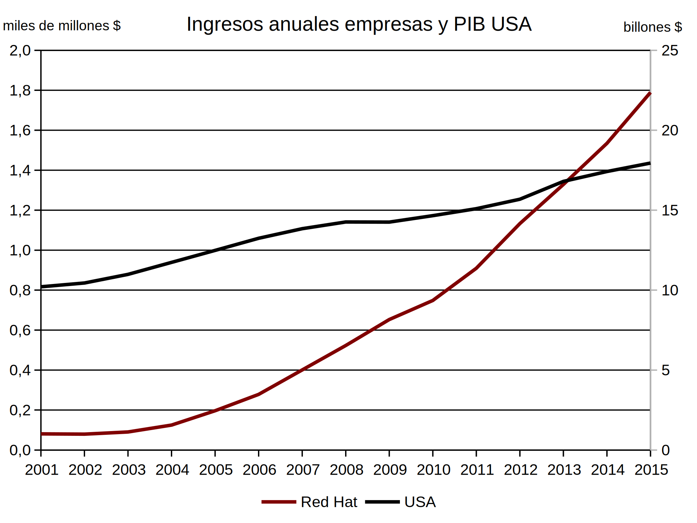
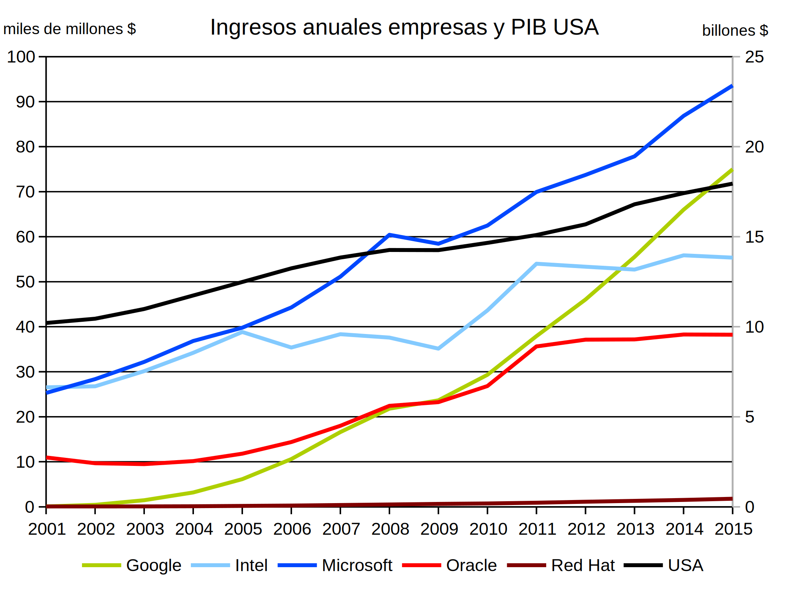
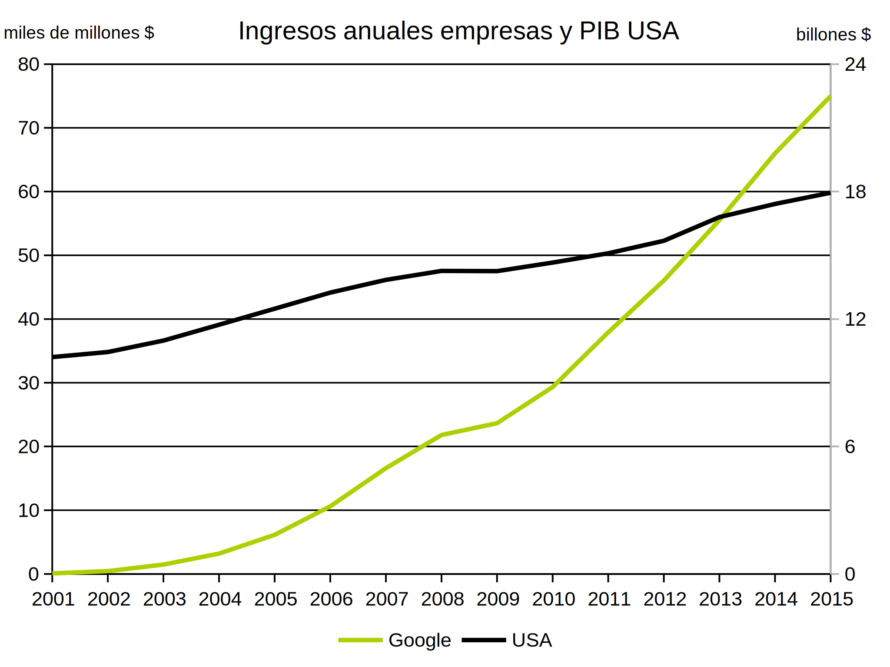
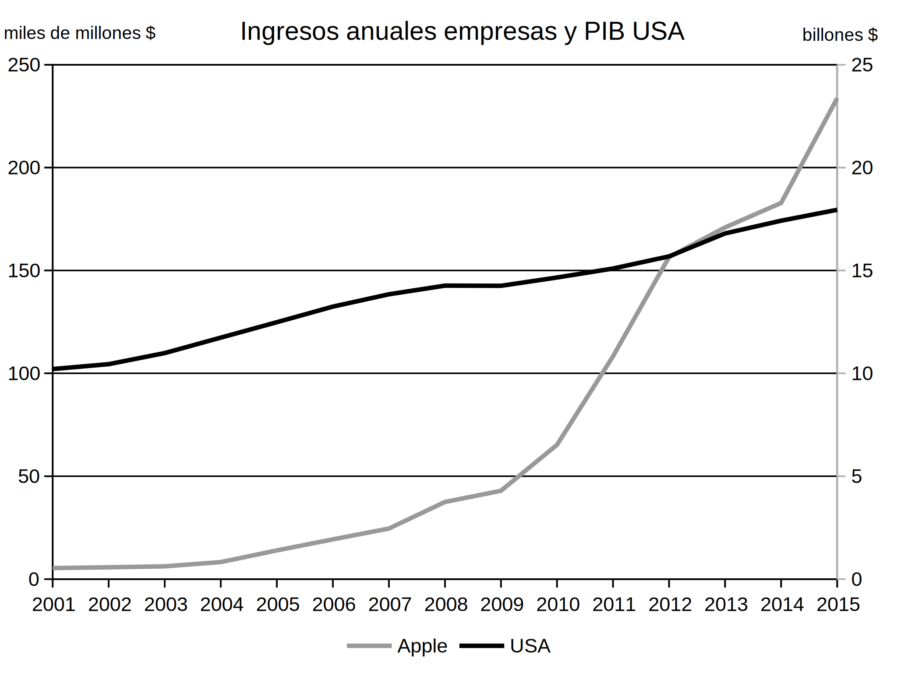
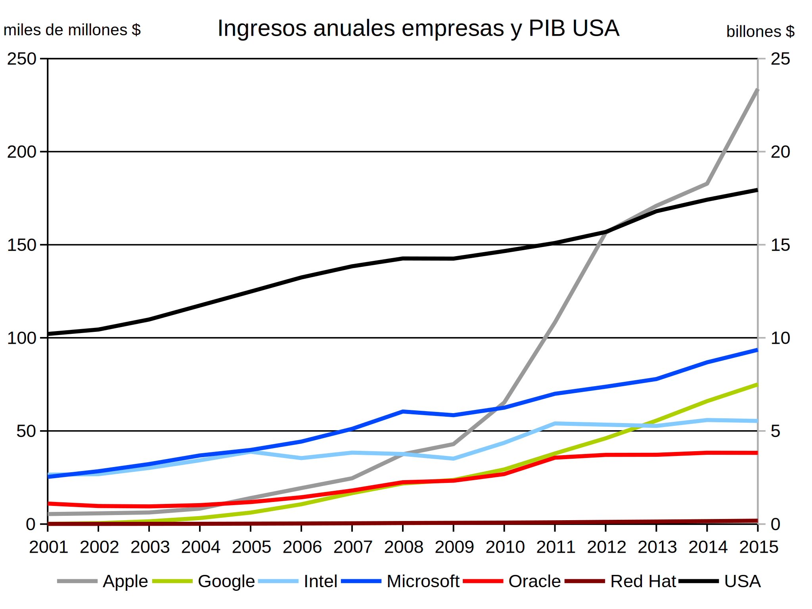

En esta página se muestran los ingresos brutos de diferentes empresas informáticas norteamericanas. Como referencia, también se ha incluido la evolución del Producto Interior Bruto de Estados Uniddos
Los ingresos (eje Y izquierdo) se han obtenido de los informes K-10 presentados por las empresas norteamericanas que cotizan en bolsa ante la U.S. Securities and Exchanges Comission (sin ajustar la inflación). Aunque cada empresa tiene una fecha de cierre contable distinta, para simplificar se han representado en cada año los datos del informe K-10 presentado ese año.
Los datos del PIB de Estados Unidos (eje Y derecho) se han obtenido de las bases de datos del Fondo Monetario Internacional.
Microsoft e Intel dominaron la informática durante las décadas de 1990 y 2000.

Red Hat es la mayor empresa del mundo del software libre. Su crecimiento en los últimos 15 años es grande, pero su tamaño sigue siendo minúsculo frente a las grandes empresas del software propietario.
 
Google es una empresa de servicios, principalmente de publicidad, pero que está involucrada en numerosos desarrollos de software libre.

Apple es una empresa de hardware y software, que pasó por momentos difíciles en los años 90, pero a la que el éxito de productos como el iPod, el iPhone y el iPad ha catapultado al estrellato.
 